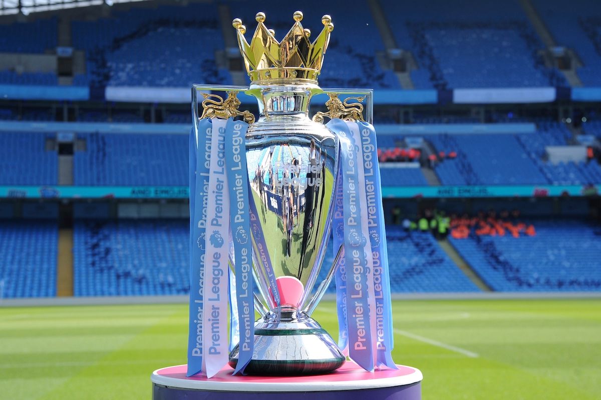
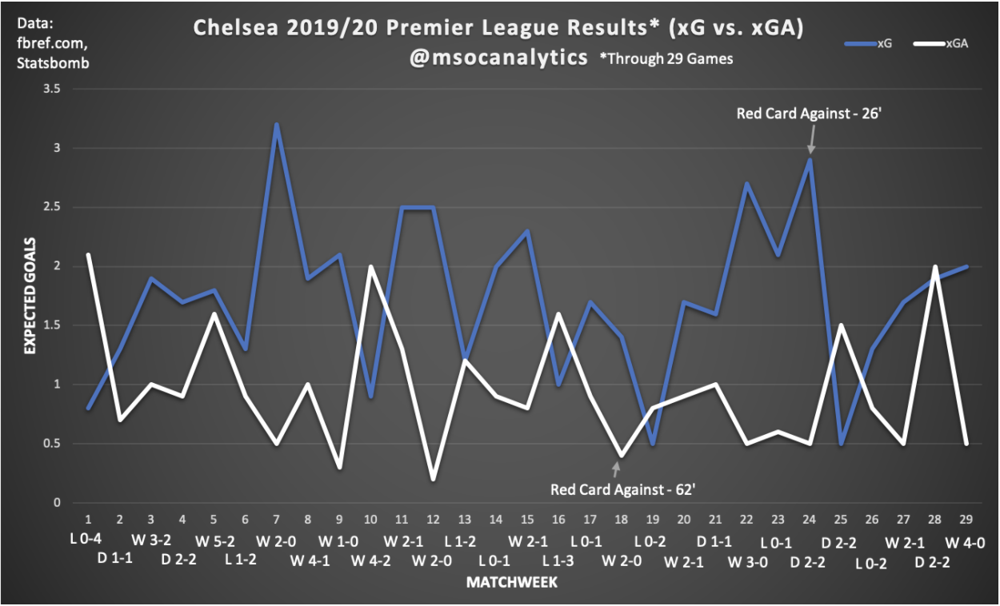
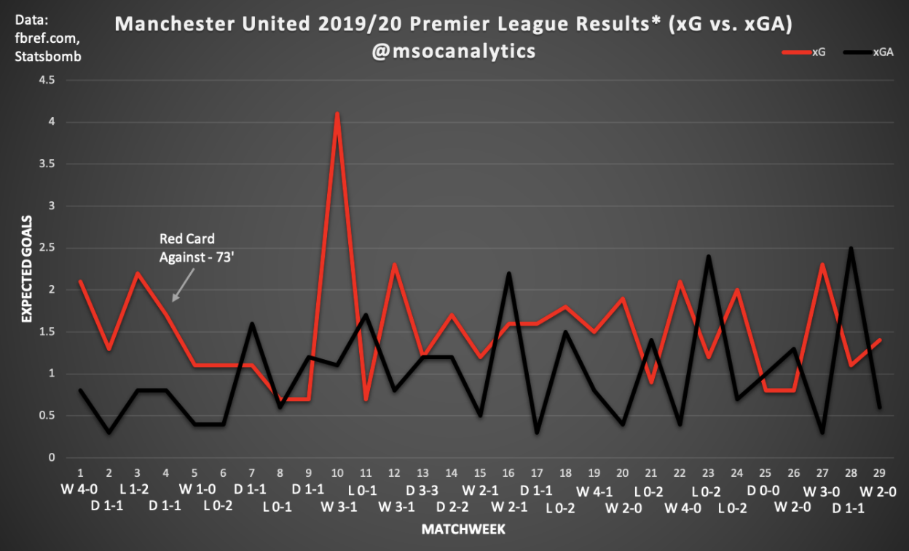

-
An Analytics Based Premier League Restart Guide
by Mitchel Green - June 15, 2020
|
mitchgr@umich.edu
Jump ahead by clicking your team's logo!

The Premier League returns on June 17th, and soccer fans everywhere couldn’t be happier. It’s another step toward normalcy, and a welcome return of a league where there is still plenty to play for. Liverpool may have basically wrapped up the title, but there are still tight races for Champions/Europa League places and an exciting relegation battle. In this guide, we’ll use data to update you on how every Premier League team has been doing so far this season, and give you one player to watch at each club the rest of the season. Let’s jump right in:
1. Liverpool (82 Points)
Much to the chagrin of fans of most other Premier League clubs, Liverpool will lift the Premier League trophy for the first time this season. This result has been inevitable for a while now, and a pandemic was the only thing that could keep them away from a deserved reward for their historic season. They aren’t the league leaders in xG or xGA - they trail Manchester City in both metrics - but through luck, some clinical finishing, and great goalkeeping from Alisson, Liverpool have overperformed their way to just five dropped points through 29 matches. Even then, they’ve won the xG battle in almost every game this season - as we can see in the time plot below. So, while they may have not been expected to dominate at quite this level, Liverpool have without a doubt been one of, if not the, best team in England this season.

Player To Watch - Trent Alexander-Arnold (Pos: RB; Age: 21):
One of the amazing things about this Liverpool team is how great they are as a unit. Sure, there are some outstanding players in the team, but even when a top player goes down with injury - like Alisson or Fabinho - their replacement has also performed at a relatively high level. So what individual do you watch in a team that is such a great, balanced unit? I think arguments could be made for a few players, but the most exciting seems to be attacking right back Trent Alexander-Arnold. People have criticized his defensive abilities this season, but his talents in possession are ridiculous for a defender, and definitely the reason to keep an eye on him. As you can see in the player radar below, Alexander-Arnold ranks in the 96th percentile or higher in shot creating actions, passes into the penalty area, and progressive passes - all per 90 minutes. Much of this is due to how often he is playing high up the field, seen in his 35 touches in the final third per 90. It’s also worth noting that he is in the top five in the league for expected assists per 90. Now the shot and assist creation metrics are a bit boosted due to him being on set pieces, but the talent is still on display in open play. He’s one of the best young players in the league, and definitely one to keep an eye on for the rest of this season to see how he continues his development.
2. Manchester City (57 Points)
The 2-2 draw with Tottenham early in the season - a match in which Manchester City completely dominated (3.0-0.2 xG) - was an early warning sign that this just wasn’t going to be the club’s year. If we look at the time plot below, City won the expected goals battle in all but three games this season, and even in one of those they had to play with ten men for 80 minutes. An injury to star defender Aymeric Laporte also didn’t help a defense that struggled at times this season. Considering all that they have dealt with this season in terms of bad luck, injuries, and a looming Champions League ban, 57 points at this stage is still a very good total. However, when the club has picked up 198 points in the previous two seasons, and Liverpool have only dropped five all season, 2019-20 looks like a bit of a failure for Manchester City. However, if the Champions League returns, and City can end up winning it, all the turmoil may be worth it.
Player To Watch - Kevin De Bruyne (Pos: MC, AMC; Age: 28):
Somehow not the runaway favorite for Player of the Year, Kevin De Bruyne was on pace to break the single season assist record before COVID-19 shut everything down. Now, he’ll get the chance to finish what he started, and there’s no reason to believe he can’t. As the below radar shows, he is in the 99th percentile of the Premier League in a whopping five metrics, including expected assists per 90, key passes per 90, and shot creating actions per 90. He’s also a bit of a goal threat from deep too, scoring four from outside of the box despite an xG of just 1.71 from those shots (understat.com). He is probably the best player in the Premier League right now, and definitely one to watch for as he tries to break the assist record.
3. Leicester City (53 Points)
The Foxes are gunning for the top once again. Brendan Rodgers has had an outstanding first full season as Leicester manager, and it looks as though a second-ever season in the Champions League is on the cards. However, even though they sit just four points behind Manchester City, the analytics suggest they shouldn’t even be close. Whereas Manchester City have dominated in most of their games - even if the results don’t suggest that - Leicester have shown inconsistencies at times this season. Looking at the time plot below, we can see slightly inconsistent performance levels at the beginning of the season and in the early months of 2020. However, they took advantage of a ridiculous run of form in November and December, and shot up the table. Though the matchweeks 18/19 defeats to Liverpool and Manchester City probably kicked off the run of inconsistent form, losing Wilfred Ndidi in matchweek 21 was more of a cause for concern. He’ll be back now though, and Leicester will continue their quest for Champions League soccer in 2020/21.
Player To Watch - Wilfred Ndidi (Pos: DM; Age: 23):
There are a couple players to watch for Leicester in the last few games. Jamie Vardy is currently the league’s top goalscorer, Ben Chilwell has impressed enough to get a look from clubs like Chelsea and Manchester City, but Wilfred Ndidi might be the most important to the way Leicester play. He doesn’t provide much of a threat going forward, but if we take a look at the radar below, Ndidi ranks in the 99th percentile in tackles and interceptions when adjusted for possession. His aggressive pressing and ability to win the ball back help Leicester regain possession and play patient, attacking soccer. Though he doesn’t play the final pass or even progress the ball that much, he can still recycle possession well and get involved in the buildup in some way - as seen by him being in the 80th percentile for xGBuildup per 90.
4. Chelsea (48 Points)
Though they’ve underperformed at times this season, Chelsea have had a successful first season so far under Frank Lampard. Many wondered how the Chelsea legend would fare given his only prior experience was one year at Derby County - much of that skepticism around his tactical ability - but Lampard has proven the doubters wrong. He’s shown a willingness to experiment with formation and style, and he’s overcome a transfer ban by giving young players like Fikayo Tomori and Tammy Abraham opportunities to play. As we can see in the time plot below, there have been times where Chelsea have dealt with some inconsistency, but they’ve fought through bad luck and injuries to find themselves in fourth place. There’s a lot of potential in this Chelsea squad, but there’s still a long way to go before they’ll be ready to compete for the title. For now, locking up a Champions League spot for next season will be the top priority.

Player To Watch - Jorginho (Pos: MC, DM; Age: 28):
Heavily criticized in his first season at Chelsea, Jorginho was singled out as the scapegoat for everything wrong with Chelsea under Maurizio Sarri. Though criticisms of Jorginho and Chelsea in general last season were a bit overblown - they finished 3rd and won the Europa League after all - a change was needed to rejuvenate a team that seemed stagnant many times in 2018/19. Jorginho has benefitted from this change, and although he isn’t providing a ton of assists as people originally expected of him, he is still a key player for Chelsea. He is crucial to the buildup - as seen in his 95th percentile rank in xGBuildup - and he progresses the ball extremely well. Most important to note is that he ranks in the 90th and 98th percentile for tackles won and interceptions per 90 when adjusted for possession. For a player who was heavily criticized for not being very good defensively, this is a huge deal for him.
5. Manchester United (45 Points)
It wasn’t a great start for Ole Gunnar Solskjaer in his first full season as manager of Manchester United. Four wins from their first 14 games carried on the poor run of form that started towards the end of the 2018-19 season. This was particularly disappointing given that at the beginning of the season, as we see in the time plot below, they were relatively dominant in terms of the xG battle. Even more surprising, as the performances became more inconsistent, the results actually started going more in United’s favor. Ultimately, results have balanced out over the course of the season, and United find themselves just three points off a Champions League spot. Whether they can reach that fourth place spot remains to be seen. The inconsistency is still there, but a good run of results could see them jump Chelsea. In the end, they may not even need to jump Chelsea if Manchester City’s Champions League ban is upheld.

Player To Watch - Bruno Fernandes (Pos: AMC, Age: 25):
He’s only played in five games for Manchester United this season, but his impact has already been felt. Unbeaten in the five games he’s played in, Bruno himself has picked up two goals and three assists already. One of the things Manchester United has struggled with this season is creating chances, especially against teams that defend deep. Bruno has been able to come in, drop deep to progress the ball - seen by his 95th percentile progressive passing metric - and create plenty of chances higher up the field in open play and via set pieces - 87th percentile in expected assists and 96th percentile in key passes and shot creating actions. He’s also a goalscoring threat - 82nd percentile in non-penalty expected goals and 98th percentile in shots. However, it is worth noting that most of his shots are not particularly good chances - 24th percentile in expected goals per shot. He will be a massive part of any success United have the rest of this season.
6. Wolves (43 Points)
The goal for Wolves in 2019/20 was to prove last season wasn’t a fluke. If they have bigger aims to one day consistently challenge for Champions League spots, or even the title, finishing in a European spot for a second consecutive season is going to be a big step toward that. Thankfully for Wolves, they seem to be on track to do that. English teams that have had to start a Europa League campaign in July have struggled in recent seasons - Burnley and West Ham for example - even if they haven’t progressed that far in the competition. Wolves have bucked that trend by not only being on the verge of a quarterfinal appearance in the Europa League, but also being within striking distance of a Champions League spot in the league. As we can see in the time plot below, they don’t often dominate teams or get dominated themselves, but by keeping games close they are always in it with a chance to win. Their conservative approach has caused them to have the joint-most draws in the league, but they’ve also lost the joint-second fewest.
Player To Watch - Adama Traore (Pos: FWR, FW; Age: 24):
A few more pounds and he could be an NFL running back. I could probably put a couple of Wolves players in this place, but I couldn’t resist highlighting one of the most fun players in the league, Adama Traore. Traore’s blazing speed is deadly on the counterattack, most evident in his second goal against Manchester City in October, and he’s upped his production this season - which may be even scarier than his physical prowess. As we see in the radar below, he’s above the 80th in four creative metrics, and the 99th percentile in successful dribbles per 90. He’s an extremely fun player to watch, and definitely one you should keep an eye on if you’re watching Wolves.
7. Sheffield United (43 Points)
While most pundits were getting excited about Norwich City and Aston Villa - with their more attacking, gung-ho approaches - and their chances of avoiding relegation, Sheffield United was quietly the most interesting team of the bunch. Chris Wilder’s team were doing some really interesting things tactically in the Championship last season - their overlapping center backs now having broken into the mainstream discourse - but with a more conservative approach than the other two promoted teams, not many people were talking about them at the start of the season. Well, they’re talking about the Blades now. Not only have they defied the odds by comfortably avoiding relegation, they sit just five points off of a Champions League place with ten games to go. As we see in the time plot below, they are a lot like Wolves in that they keep games close so they always have a chance to win. Though their inability to score can leave a lot to be desired at times - poor David McGoldrick hasn’t scored from an xG of 5.6 - some of this can just be attributed to bad luck, and goalkeeper Dean Henderson has been immense at the other end to counteract the sometimes lackluster finishing. Europe is on the horizon for the Blades.
Player To Watch - Oliver Norwood (Pos: DM, MC; Age: 29):
Having just signed a new contract through 2023 a few days ago, it’s clear how important Oliver Norwood is to Sheffield United. Being on set pieces makes him one of Sheffield United’s biggest creative threats - second in the team in expected assists at 0.13 per 90 - and he’s also crucial to their buildup play - second in xGBuildup and first in progressive passes. His long passing is his biggest strength, and definitely a reason why he ranks in the 94th percentile for progressive passes. He’s been excellent in that deep-lying playmaker role for Sheffield United this season, and it will be interesting to see how the Blades do with him and exciting new signing Sander Berge in midfield.
8. Tottenham (41 Points)
A Champions League final appearance last season masked a poor run of league form that started in late February. And while there was a bit of optimism at the beginning of this season - especially after the signings of Tanguy Ndombele and Giovani Lo Celso - the poor run of form continued into this season. An inconsistent start caused longtime manager Mauricio Pochettino to get the boot, and Jose Mourinho made his return to management as his replacement. Did Mourinho succeed in righting the ship? Well… not really. Or rather, not yet. Five wins in his first seven games was a positive sign, but as we can see in the time plot below, Tottenham’s performances have remained inconsistent. There have been injuries and suspensions to key players like Harry Kane and Son Heung-Min, but overall this season has been a failure after the heights of the last few seasons. Unless something changes, they are in danger of missing out on European competition all together next season.
Player To Watch - Giovani Lo Celso (Pos: MC, AMC, Age: 24):
Though highly regarded when he was signed this summer, it wasn’t until the last few weeks before the break that Lo Celso was getting a good number of minutes under his belt. Although fans may have expected more when he signed for around €50 million, Lo Celso has shown what he's capable of when he plays. He’s good in possession - ranking above the 80th percentile in progressive passes, passes into the penalty area, and shot creating actions, and in the 92nd percentile for xGBuildup. He’s also very aggressive out of possession - ranking in the 94th percentile for pressures, 99th for pressure regains, and 96th for tackles won when adjusted for possession. All of this makes him a very promising all-around midfielder, and one to watch for at the end of this season and into the next.
9. Arsenal (40 Points)
It’s way too early to make a judgement on Mikel Arteta’s time as Arsenal manager. Though they didn’t have that “new manager bounce” that a lot of clubs experience when a new manager comes in, that shouldn’t worry fans. The former Arsenal midfielder has a long, difficult rebuild ahead of him. Even so, he has just a single loss since getting the job in December. Under Emery, Arsenal often seemed directionless - both in terms of on field playing style and recruitment philosophy. Like Tottenham, a run to the Europa League final masked a really poor run of form that has carried into this season. Also similarly, a change in managers has not helped the problem, at least this season. Arsenal have struggled to create good chances for much of this season, which might suggest that the problem is with the players given that this has remained consistent through a shift in systems. They have an xG/game of 1.29, which ranks 10th in the league, and is a number that would’ve been unthinkable even in the worst seasons of the Wenger era. There is hope for Arsenal fans, however. It seems Arteta has an idea of how he wants his team to play, and that direction will help Arsenal recruit the right players to bring success in the long run.
Player To Watch - Pierre-Emerick Aubameyang (Pos: FWL, FW; Age: 30):
Despite being played on the left for much of this season, and a lack of good service from teammates, credit to Aubameyang for continuing to score loads of goals. It speaks to his fantastic movement and ability to find space that, despite Arsenal struggling to create chances, he still ranks above the 90th percentile in non penalty xG per 90 and per shot. He may not be getting many chances, but they’re typically very good when they come, and Aubameyang takes advantage. He’s scored 16 non-penalty goals from a non-penalty xG of 10.5, perhaps a bit lucky, but he has shown in the past an ability to consistently outperform his xG so great finishing is probably a greater factor. The 30 year old forward doesn’t create much for his teammates - he’s below average in most creative metrics - but if he can get players around him creating more, better chances, he’s sure to keep up his scoring rate.
10. Burnley (39 Points)
A year removed from their European adventure, Burnley are looking to try and do it again. Sean Dyche continues to work wonders with one of the lowest budgets in the division, but they’ll have to make the most of this core group very soon. The average age of all players with 1000+ minutes in the squad is 28 - meaning most of the squad is nearing/at the end of their prime. Only two players aged 25 and under have logged over 1000 minutes, so a massive squad overhaul will be required very soon. For now, Sean Dyche will be worrying about his team finishing this season on a high note by continuing their good form from before the break. Wins against Wolves and Sheffield United in their remaining games could propel them into a European spot, but a mid table finish is looking most likely for Burnley.
Player To Watch - Dwight McNeil (Pos: ML; Age: 20):
Though he’s still very raw, the 20 year old wide midfielder is Burnley’s best creative threat and one to watch for the rest of this season. He’s a bit one-footed, so don’t expect him to cut in on his right foot and shoot a lot - as seen in his shot and xG/90 metrics - but he provides a lot of quality through his dribbling. McNeil ranks in the 88th percentile for successful dribbles, and he can progress the ball really well this way when given space. His crossing is his best asset, and he creates a lot of chances this way - which suits Burnley as their two strikers are typically very good in the air. His xA/90 (90th percentile) and key passes (81st percentile) are strong, especially given most of the chances he creates come from open play. Bigger clubs have reportedly been interested in him, but I think he’ll need to develop a bit more before he’s ready to make the jump.
11. Crystal Palace (39 Points)
Great goalkeeping has been Crystal Palace’s savior this season. Vicente Guiata has been immense as he has conceded around eight goals fewer than expected based on post-shot expected goals. That has no doubt helped Crystal Palace to their current position in the league, especially given that they have had runs this season where they have been dominated. The run from matchweek 11 to matchweek 17 is a perfect example of this as they were only able to crack 1.0 expected goals once during the run and have an xG difference of -1.0 in all but two of those matches. For a team that’s second bottom in xG for the season, it’s extremely important that they keep games close and maybe grab a lucky goal. Thankfully for Palace, that’s exactly what they’ve done this season. Though they’ll look to continue their three game win streak, the ceiling for this team probably isn’t much higher than their current position.
Player To Watch - Patrick van Aanholt (Pos: LB; Age: 29):
Though most of his metrics don’t look particularly impressive when compared with the rest of the league, Patrick van Aanholt is still one of Palace’s top creative players. He is first on the team in progressive passes - and actually ranks in the 93rd percentile in the rest of the league - he is top 3 in passes into the penalty area, top 2 in key passes, and top 3 in shot creating actions. Despite being a defender in a team that loves to sit deep, Patrick van Aanholt gets forward a lot - he is top 3 on the team in touches in the final third. Though Palace doesn’t create much in general, a lot of it comes through him, which makes van Aanholt a very exciting player to watch.
12. Everton (37 Points)
14 points from their first 15 matches was enough to get Marco Silva sacked in December. Duncan Ferguson did a fine job as interim manager, but new permanent boss Carlo Ancelotti has been exactly what Everton needed. Performances have improved dramatically since Ancelotti was brought in. As you can see in the time plot below, since Ancelotti’s hire, Everton have been performing at a much higher level consistently than in the first half of the season. Since Ancelotti was hired, they have only had an xG of less than 1.0 once, and have lost the xG battle just twice. This could possibly be the “new manager bounce”, but Ancelotti seems to be the perfect fit for Everton. One of Ancelotti’s biggest strengths - and one he’s shown throughout his career - is his ability to adapt the system to the players at his disposal. Ancelotti seems like he’s been able to do that so far, especially in finding an excellent strike partnership in Richarlison and Dominic Calvert-Lewin. Calvert-Lewin wasn’t effective enough playing alone up front in Silva’s 4-2-3-1, and Richarlison wasn’t able to influence the game nearly as much when pushed out to the right. But both have seen a resurgence since moving to a front two in Ancelotti’s 4-4-2. A European place is still possible for Everton, but how Ancelotti decides to build the team going forward will be much more interesting to see.
Player To Watch - Dominic Calvert-Lewin (Pos: FW, Age: 23):
Though Richarlison is probably the more complete player of Everton’s two forwards, Dominic Calvert-Lewin might be the one who has benefited more from Ancelotti’s appointment. His 0.58 non-penalty expected goals per 90 already ranks third in the league, but since Ancelotti was brought in, it has actually been 0.71 per 90 - tied with Sergio Aguero’s complete season for 2nd. He is also very good in the air - ranking in the 97th percentile for aerial duels won with 5.94 - which helps an Everton team that ranks 3rd in the league for crosses. It will be interesting to see if Calvert-Lewin can keep up this form, but if he does he could end up being one of the best strikers in the league.
13. Newcastle (35 Points)
Is Newcastle the luckiest team in Premier League history? I only have data going back a couple of years, but I’d guess they’re at least one of the luckiest. When manager Rafa Benitez and top goalscorer Salomon Rondon left in the summer, hopes were not high for the 2019-20 campaign. Even if big money was being spent - like the €44 million for Hoffenheim’s Joelinton - expectations were low. However, Steve Bruce’s team has defied expectations and analytics to find themselves eight points above the relegation zone with nine games to go. Goals have been hard to come by this season - they are joint-bottom in goals scored with 25, and bottom in xG with 25.3 - but they also haven’t been a defensive powerhouse - with the fourth highest xGA in the league at 45.7. They have been dominated so often this season, yet they find themselves with as many wins as Arsenal. Goalkeeper Martin Dubravka has been critical to their success this season - conceding 8.7 goals fewer than expected based on post-shot expected goals - but overall I just don’t know how they do it. Definitely an interesting team to analyze the rest of the season.
Player To Watch - Allan Saint-Maximin (Pos: ML, AML, FWL; Age: 23):
An extremely flashy player that you wouldn’t typically expect to see in a team that plays the way Newcastle does, Allan Saint-Maximin is extremely important as their greatest creative threat. His excellent dribbling - as seen in his 99th percentile successful dribbles metric - makes him dangerous when given space, and this combined with his speed makes him a dangerous player on the counterattack. His end product could use some work, but there is already promise in that area - he ranks in the 71st percentile for non-penalty expected goals and 87th percentile for expected assists. More minutes with his new teammates may help with this, but it will be something to watch for in the coming weeks and into next season.
14. Southampton (34 Points)
This was a transition year for Brighton. After five seasons, they moved on from Chris Hughton in favor of Graham Potter and a more attractive, attacking, possession-based style. Did the switch bring more success? Well… it’s too early to tell. A complete overhaul in playing style like this is going to take awhile to see the effects of, but there are some early signs that would suggest it will work. Through 29 games, Brighton’s xG per game is 1.18 - up from 0.92 last season - and their xGA per game is 1.40 - down from 1.45 last season. As you would expect when moving to a more attack-minded system, their expected goals went up, but what’s more interesting is that they seem to be better defensively this season - if only marginally so. In games where they dominate possession, they can keep their xGA relatively low because they can starve their opponents of the ball and give them fewer opportunities to score. That said, Brighton can sometimes give their opponents one or two big chances per game, and those will often be taken. So the defense could still use some improvement, but overall there are positive signs for the new direction Brighton are trying to take.
Player To Watch - Neal Maupay (Pos: FW, FWR; Age: 23):
One of the top goalscorers in the Championship last season, Neal Maupay was a necessary signing for a squad whose main source of goals the season prior was now 36 year old Glenn Murray. Maupay’s finishing leaves a bit to be desired at times, but he is getting good opportunities often - as seen by his 92nd percentile non-penalty xG per 90. Though not much of a creative threat, he is the focal point of a lot of Brighton’s attacks - as seen in his 96th percentile touches in box metric. He’s struggled at times this season, but he has shown a lot of potential at times this season. At just 23 years old, he’s still got plenty of time to develop his skills and an understanding with his teammates. As long as s bigger club doesn’t swoop in for him, Maupay will be a mainstay for Brighton for years to come.
15. Brighton (29 Points)
Though Ralph Hasenhüttl used a 3 at the back system quite a bit last season, the experiment with it seemed to end with the early season 9-0 drubbing they received from Leicester City. Though they went a man down early on in that game, it seemed to spell the end of playing with three central defenders for Southampton. Two games later, Hasenhüttl switched to a 4-4-2/4-2-2-2 system that they’ve used in every game since. This switch coincided with Southampton’s best run of form, which as we see in the time plot below, ran between matchweeks 13 and 22. Though the early season inconsistency seems to have returned, that great midseason run of form should be enough to see Southampton avoid relegation.
Player To Watch - Danny Ings (Pos: FW; Age: 27):
It’s always nice to see players from non-big six teams challenging for the golden boot - though not necessarily when that player used to play for your club. But I really am happy for Danny Ings. He’s always been an excellent player - always getting good shots off and being great out of possession, especially in defense when pressing. All of this is on full display this season - being in the 98th percentile for non-penalty xG, 92nd for xG/shot, and 96th for successful pressures. He’s not a complete forward - he’s about average in most creative categories - so Ings is at his best when playing with a strike partner as he did at Burnley. He’s dealt with so many injuries over the past couple of seasons that he deserves this resurgence. He’s only four goals off the lead for the golden boot, hopefully he can put up a good fight.
16. West Ham (27 Points)
What a mess! This is what happens when you have a ton of money to spend and no direction for your club. I almost don’t want them to get relegated so I can continue watching this ridiculous soap opera of a club. From the Dimitri Payet saga, to fans storming the field during a 3-0 home loss to Burnley, I can’t wait to see what exciting twist the club’s story takes next. West Ham had a decent first season under Manuel Pellegrini - they finished 10th - but there were still problem areas in the squad, especially in the defense. They were able to mask those deficiencies through the heroic shot stopping of Lucasz Fabianski, but an early season injury badly exposed a defense that wasn’t strengthened this summer in favor of even more offensive firepower. Sebastian Haller - who was bought for €40 million from Frankfurt - has not been able to recreate his European and Bundesliga form from last season, and the result is a team that struggles for goals and struggles even harder to keep them out. Even a midseason managerial change to former boss David Moyes has not improved the team’s performances. West Ham’s destiny is still in their own hands, but if they don’t improve quickly, they could be in the Championship next season.
Player To Watch - Declan Rice (Pos: DM, MC; Age: 21):
Conservative passer with possession, aggressive defender without it, Declan Rice’s name has been thrown around a lot in the last couple of seasons when bigger clubs are looking for a defensive midfielder. In terms of his defensive capabilities, it’s easy to see why. He’s an aggressive presser - something that would put him right at home in most top sides’ pressing systems - and excellent at regaining possession - 96th percentile in tackles won and 91st in interceptions when adjusted for possession. But in possession is where you see a lot of question marks. Manchester City’s Rodri is a player with a similar build to Rice, but Rice doesn’t progress the ball nearly as well as Rodri. He ranks in the 37th percentile for progressive passes, and is well behind top club holding midfielders in terms of passes into the final third. Is this because West Ham don’t play with a lot of possession? At that point, you have to wonder whether Rice would be at home in a more possession based system. He’s still young though, so he’s definitely one to watch to see how he develops.
17. Watford (27 Points)
One win from their first 17 games. One! Nine goals in their first 17 games. Nine! And yet, Watford find themselves outside of the relegation zone on goal difference. How does this happen? No, it’s not by getting the same manager that masterminded Leicester’s great escape in 2014/15 - though he’s probably helped a bit - they’ve simply reverted back to how their performance levels have suggested they should be playing. Watford were way underperforming at the beginning of the season - scoring 9 goals from an xG of 18.9 and conceding 32 from an xGA of 28.9. Bad luck, poor finishing and goalkeeping, and injuries all played a factor, but Nigel Pearson seems to have got them performing as expected. The time plot below indicates that their performance levels haven’t changed much since Pearson took charge - they still remain rather inconsistent - but the results match up more to those levels. And now, with the bottom of the league so close together, every point counts.
Player To Watch - Ismaila Sarr (Pos: FWR, MR, FW; Age: 22):
No, the Liverpool game is not why I’m highlighting Ismaila Sarr. The 22 year old winger was bought by Watford in the summer for €30 million after a good couple of seasons at French club Rennes. Sarr struggled for minutes at the beginning of the season, but has featured a lot since Nigel Pearson took over in December. A lot of people may not have been aware of him before his brace against Liverpool ended the leaders’ hopes of an invincible season, but his production was good before that game. He ranks in the 91st percentile for non-penalty xG, touches in the box, and shot creating actions. He also ranks in the 95th percentile for successful dribbles - his main means of progressing the ball. He seems like he’ll be a solid goalscoring wide forward for Watford, all he needs is more minutes.
18. Bournemouth (27 Points)
Bournemouth haven’t been their usual free-flowing attacking selves this season which, while improving the defense slightly, has really hurt their goal threat. Now, there are other reasons for this drop in attacking performance. Key contributors from last season have either regressed or been injured for long portions of this season. Overall this season has been a complete bust for Bournemouth. They’re only in the relegation zone on goal difference, but they’ll need to string together a good run of games if they want to jump the teams ahead of them. Bournemouth have struggled to dominate teams this season, but if they can keep games close - something they’ve also struggled to do at times - they might be able to sneak a win or two to keep them up.
Player To Watch - Diego Rico (Pos: LB, WBL; Age: 27):
The star of a not-as-bad-as-usual Bournemouth defense has actually not been Nathan Ake, but Diego Rico. The left back’s chance creation numbers are a bit boosted by him being on set pieces, but he’s still progressing the ball very well through his passing - 97th percentile - and has been very successful at winning the ball back via interceptions - 99th percentile when adjusted for possession. Though Bournemouth’s defense has still been pretty bad this season - they are fifth worst for xGA - Rico’s ability in possession might see a team come in for him this summer if Bournemouth are relegated.
19. Aston Villa (25 Points)
There were worries about Aston Villa in their return to the Premier League when they “did a Fulham” and spent around €150 million in the summer. Fulham, of course, notoriously spent over €100 million on players before immediately being relegated back to the Championship. The concerns come from the idea that the team won’t have as much chemistry because it’s almost entirely a new set of players. While I see these concerns, to be fair to Aston Villa, they did lose a few key players that were on loan the previous season, and they had quite a bit to replace in terms of minutes and production - including top goalscorer Tammy Abraham. Still, the result hasn’t been great, and Aston Villa find themselves second bottom - though just two points from safety. The defense has been the biggest issue this season. An xGA of 57.0 is the worst in the league, and in the second half of the season they have been completely dominated in almost every game. Injuries have also been an issue, especially in attack where the new €25 million stiker, Wesley, has missed the last seven games. Safety is nowhere near out of the question yet, but Aston Villa will need to improve in the coming weeks if they want to have any chance of staying up.
Player To Watch - Jack Grealish (Pos: FWL, AMC; Age: 24):
Jack Grealish might just single handedly drag Aston Villa to safety. He’s shown himself to be one of the best attacking midfielders in the league this season - ranking above the 90th percentile in four creative metrics. While also being Villa’s greatest creative threat, he also remains a goal threat from deep. Though he hasn’t had a ton of high quality chances this season - his xG/Shot is just 0.09 - Grealish has shown an ability to cut in from the left and score with his right foot. With the sheer volume of shots he gets off, he’s bound to score a few of them, and this has led to him scoring seven goals in total this season from an xG of 4.7. Who knows if Grealish will still be at his boyhood club next season, but unless Villa stays up I don’t see that happening.
20. Norwich (21 Points)
Oh, Norwich. There was so much promise for them this season. With a fun attacking style of play and some really quality players, a lot of people were predicting the Canaries to stay up. However, after countless injuries and some bad luck, Norwich find themselves bottom with nine games remaining. They aren’t relegated yet, and just six points from safety with games against teams close to them, they could still make a great escape. The defense has been an issue all season. They have an xGA of 46.5 - third highest in the league. This isn’t necessarily a death sentence for a team - and teams have stayed up in the past despite a much higher xGA - but it often requires the attack to pick up the slack. Norwich haven’t done that unfortunately, scoring just 25 goals from an xG of 33.7. They’ve been underperforming at both ends, and although they do have some quality players that could still be in the league next season, it doesn’t look like the Canaries will be.
Player To Watch - Emi Buendia (Pos: AMR, AML, AMC; Age: 23):
I think Buendia might be the most underrated player in the Premier League. For most of this season, he hasn’t even been getting the most attention of anyone at Norwich. The goalscoring exploits of Teemu Pukki have stolen most of the headlines surrounding the Canaries this season. But Buendia has been absolutely critical to any success Norwich have had this season. As we see below, Buendia ranks above the 92nd percentile in eight metrics, including being in the 99th percentile for expected assists and key passes. Often the only player in the league ahead of him in these creative metrics is POTY candidate Kevin De Bruyne. Though he may need to improve his goal threat, bigger clubs should be having a look because he could be an absolute bargain if Norwich get relegated at the end of the season - he’s currently listed at €14.5 million on transfermarkt.com.
All Data from: fbref.com/Statsbomb, understat.com